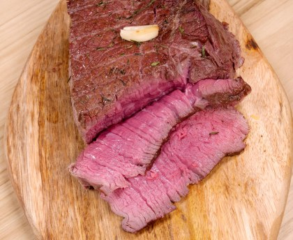

Temps de cuisson : 45 min
Difficulté : Facile
Préchauffer le four à 220°C (thermostat 7-8). Mettre le rôti avec barde et ficelles dans un plat qui va au four. Couper la gousse d'ail en deux et en frotter le rôti. Parsemer le haut du rôti de thym et l'arroser d'huile d'olive. Poser les gousses d'ail sur le rôti.
Enfourner pour 15 minutes de cuisson. Sortir le rôti et retirer la barde et la ficelle. Ajouter l'eau et faire tomber l'ail dans le plat
Saler et poivrer à convenance le rôti. Laisser cuire 10 à 15 minutes au four selon la cuisson désirée.